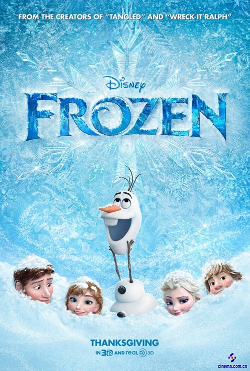

Frozen
director:Walt Dohrn
Frozen is a hit Disney animated movie centered on royal sisters Elsa and Anna. Elsa hides her dangerous ice - controlling powers until an accident freezes their kingdom of Arendelle. Anna embarks on a tough journey to unfreeze the land and mend their bond, with heartwarming themes of love and courage.
Main Characters

Olaf
voice:Josh Gad
Olaf is a naive and cheerful snowman in Frozen, created by Elsa’s magic. He dreams of experiencing summer. Playful and warm - hearted, he always brings joy to Anna and Elsa, and is a loyal friend to them.